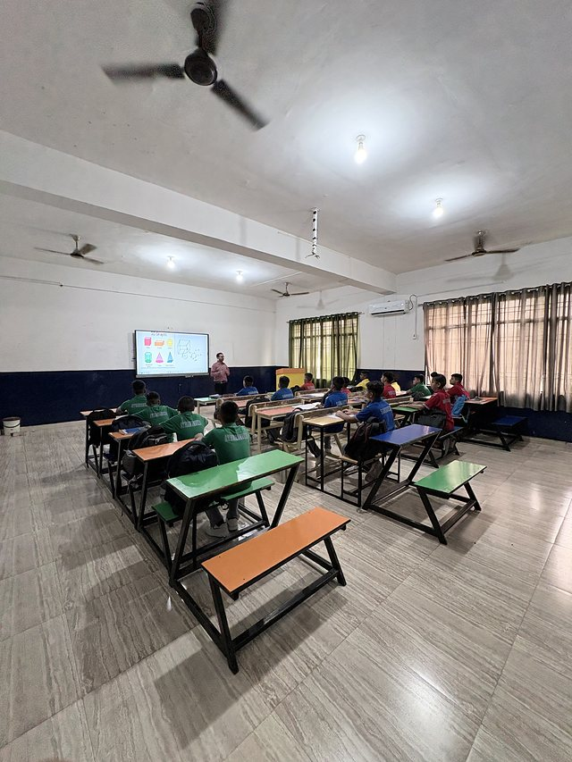
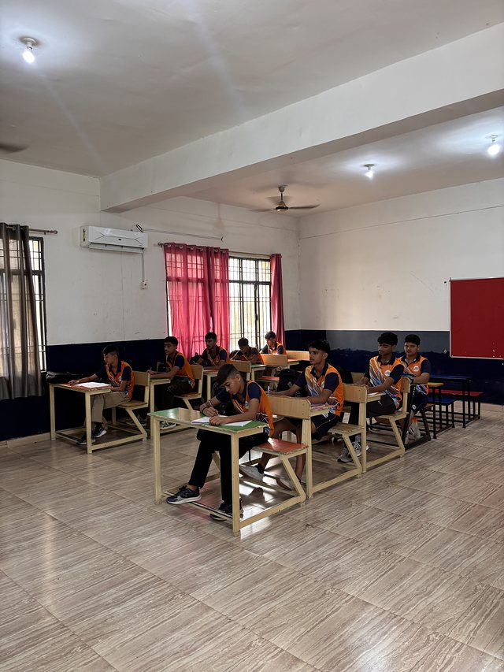
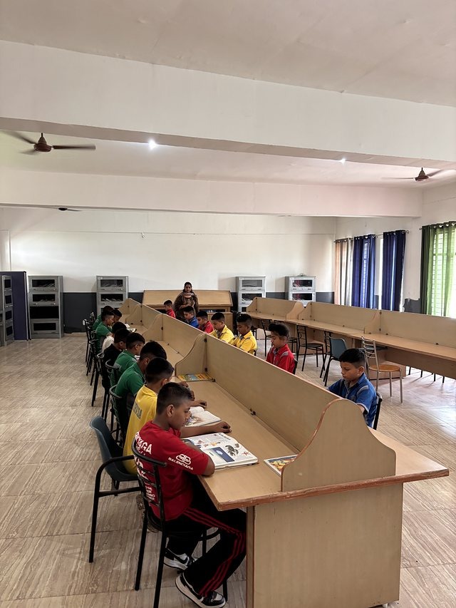
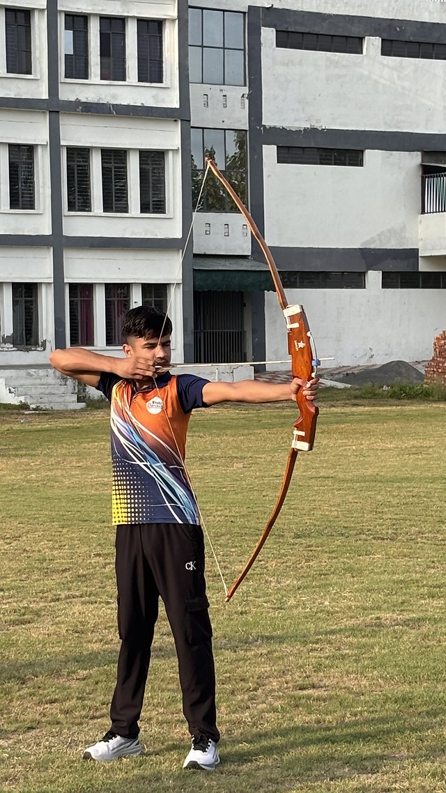
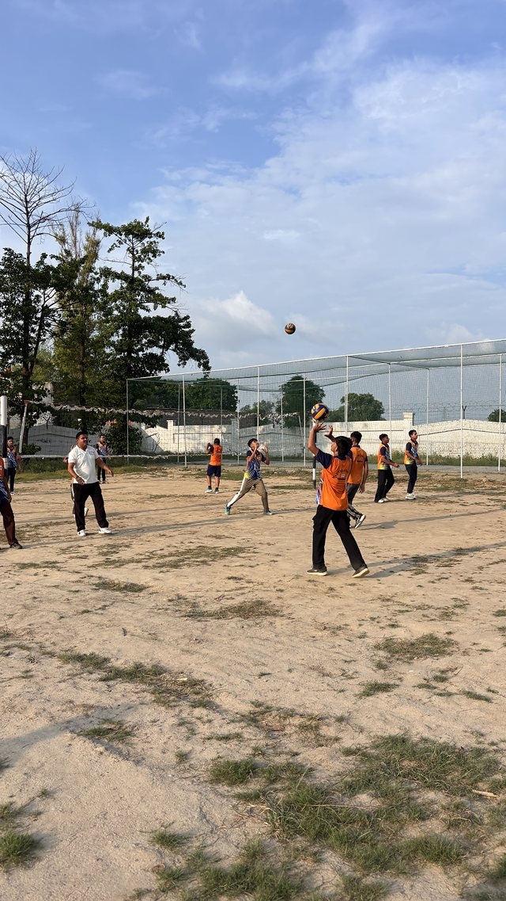
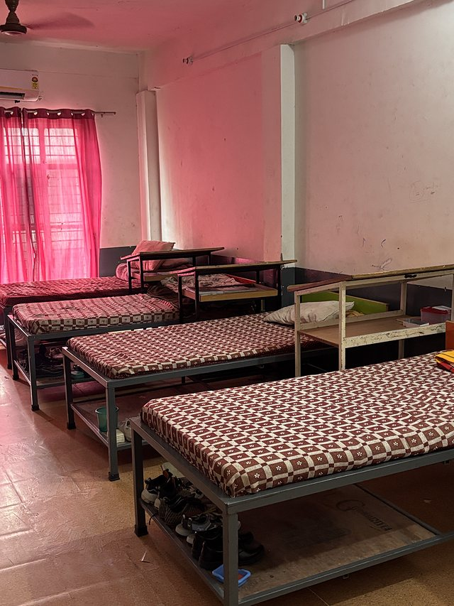

Gallery
Academics
Air-conditioned smart classrooms, daily doubt classes, and faculty who teach from the board as readily as from the screen.





Laboratories & Library
Fully equipped Physics, Chemistry and Biology labs, and a quiet library built around individual study.
Science Laboratories
Demonstrations at the front bench, then hands-on apparatus for every student.


Practicals & Reading
Bench work in the labs, and a library laid out for uninterrupted study.



Sports & Physical Training
Professional coaching across thirteen disciplines, from archery and martial arts to team sport on the multi-purpose court.






Campus & Residential Life
A fully air-conditioned campus and hostel, from the reception desk to the residential wings.
Academic Block
Naturally lit corridors connecting classrooms, labs and the library.


Hostel & Corridors
Air-conditioned residential wings with a bed, wardrobe and study space for every student.


